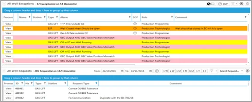
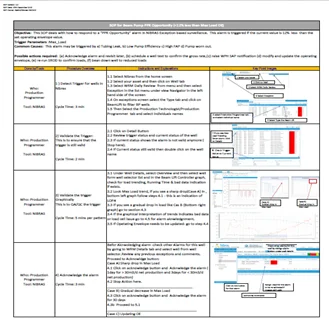
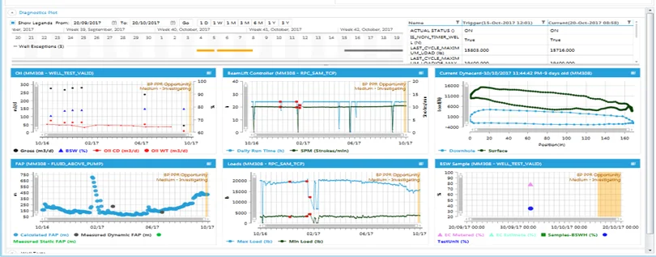
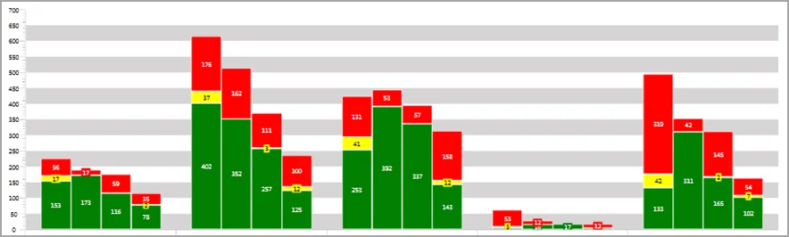

Exception Based Surveillance for Wells
Doubling the well count without doubling the team — by having the system decide what deserves an engineer's attention.
Our customer was facing significant growth in well count with no chance of matching that with a similar increase in staff — from 4,500 to 9,000 wells in 10 years. Each asset team was spending 30–120 minutes a day identifying well problems, and analysis of ESP problems took 25 minutes, repeated by 3 disciplines with no clear ownership.
Increased efficiency in well management and opportunity-value realization was required — Exception‑Based Surveillance combined with Lean was the selected approach, built on the Nibras platform: a Standard Exception Viewer that prioritizes work by value, role‑specific SOPs guiding engineers to a minimum standard regardless of experience, standard diagnostic plots per well type to establish root cause, and an Andon board tracking exception‑handling performance across assets, well types and roles.
- 98% of 7,500 wells, of 12 different types, are monitored by EBS
- Employee survey results show a saving of 40% of PE and Ops staff time through semi‑automated Nibras Lean‑EBS process workflows
- Well count grew by 67% in 5 years but engineers monitoring wells grew by only 33% — 50 PEs saved
- Faster detection of, and value realization from, well problems and optimization opportunities — leading to 5% extra production
- 30,000 bpd of hidden deferment made visible by the semi‑automated well‑deferment booking workflow
- SOPs (Standard Operating Procedures) improved the quality of well monitoring




Built on Wells Management.
EBM for Wells, Virtual Metering, and the E‑Well Book behind this result.